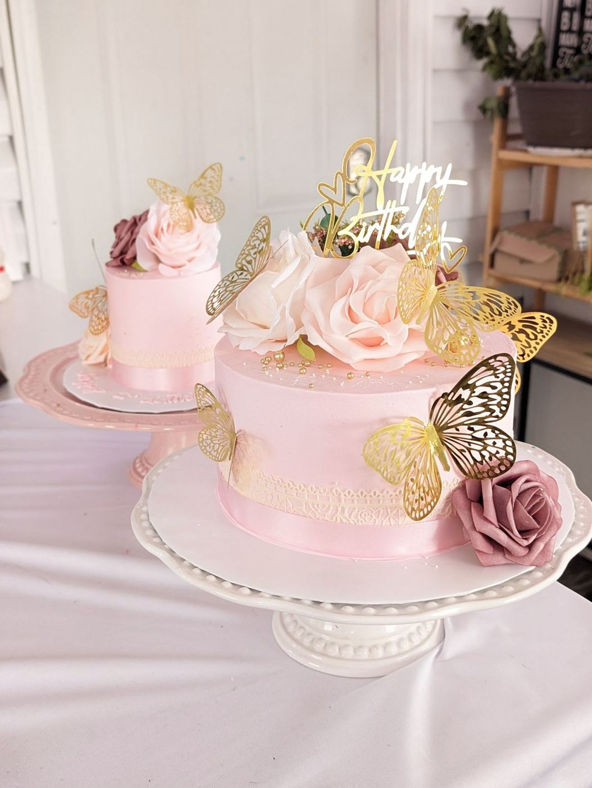

4.9★ sweet words

“We love Elida’s Bakery cakes! Delicious and healthy tasting. Highly recommended.”
“service was amazing, the cake and cupcakes were so cute and tasted great, exactly what I wanted! 10/10 recommend :)”
“Elida's Bakery outdid themselves this year at the Corridor Holiday Market last week in Coralville! Such a great variety of treats. I bought several different things and everything tasted so fresh and delicious! I can't rave enough of how fantastic everything was. Tres Leches, different cakes in cups- oh man so good, Ube Tres Leches (new to me and FABULOUS), Choco Flan Cheesecake (insanely good) and Dubai Chocolate Cake (hands down best ever). Whatever recipe you use for your Dubai Chocolate Cake is perfect. PERFECT. Please don't ever change it! It's the best there is! We can't get enough of…”
“10 out of 10 experience. From the ordering, payment, pick up and taste everything was 10 out of 10. Would highly recommend her to anyone who’s got a special occasion coming up. Very talented artist, that off a couple simple request put together something better than what I was picturing in my has. Go support your local small business. She will not disappoint. (The second picture was from the transport. I did not pick it up like that.)”
“Best cake I’ve ever eaten! My mother in law bought us a cake from Elida for our wedding and it was PERFECT! 10/10 would recommend! Everyone in our family loved this cake. It stole the show! We have been enjoying this cake over the past several months since our wedding (it thaws out just fine). Each time we eat a piece, we comment on how amazing this cake is. The icing is so light and delicious, and the two layers of blueberry compote are a sweet detail. It’s so good, we’re coming back after 7 months to write a review.”
“Elida's Bakery is absolutely wonderful. The staff is friendly, patient, kind and willing to go above and beyond to help their customers. On top of that, the desserts are beyond incredible. So flavorful and the texture of the Vanilla Tres Leches and Dulce De Leche Tres Leches we ordered were amazing!! We have ordered 3 custom cakes from Elida’s and each was fantastic! We’ve ordered: 1) Chocolate Oreo, 2) Red Velvet, and 3) Vanilla with Vanilla Buttercream Frosting. I would highly recommend ordering from Elida's Bakery!”
“Look at how gorgeous this cake was! It was such an amazing pleasure working with Elida's bakery that I would recommend them to everyone. The cake was so delicious and everyone loved it. The design was perfect and fit in so well with our decor. She even threw in a mini tres leches cake that was to die for. Overall a great experience!”
“The BEST experience I’ve had ordering custom cakes! We’ve now had two custom cakes made and they both blew our expectations out of the water! And I’m not simply meaning the cakes themselves, because they were delightful, but their customer service and attention to detail is second to none. My wife and I look forward to ordering from them for our next big event and beyond!”